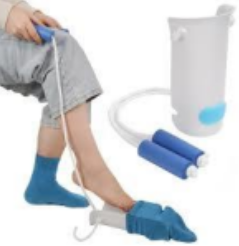
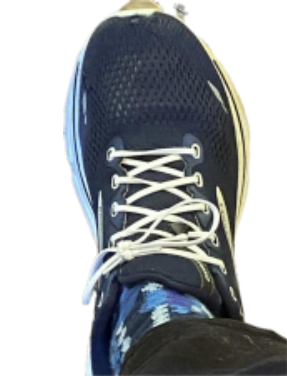
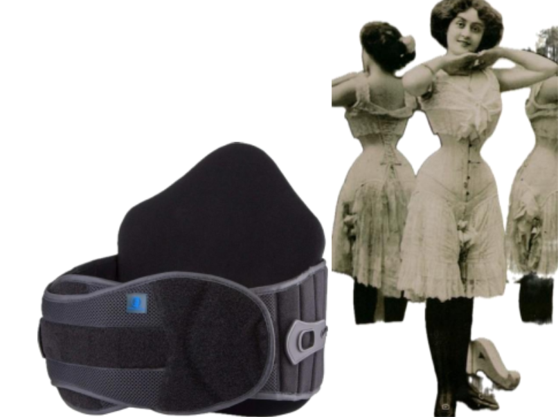
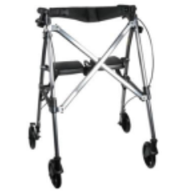
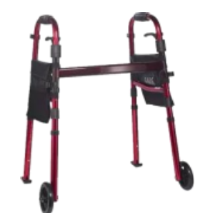
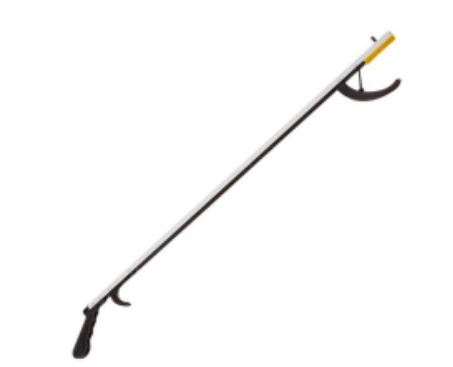
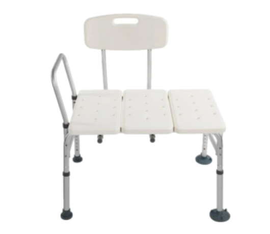
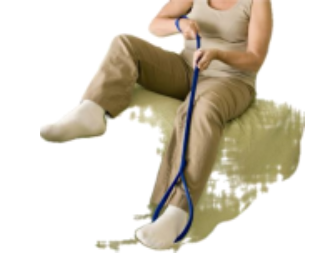

By Elizabeth Dunlop Richter
Velcro. Plastic tubes. Pillows. Chairs with arms. Transfer bench, Lumbar Braces. Reachers. Rollators. The words range from the familiar to the not so familiar. If you’ve been a caretaker or a patient in rehab of some sort, you know where this is going. But for many of us, myself included, this world of recovering from a major operation was brand new. It would be made possible by what I call my “toys.” Don’t we all nostalgically remember days of playing with toy trains and erector sets, figuring out puzzles, and trying on Halloween costumes. With luck, these days can come back in new “packaging.”
If you’ve had a baby, you know the feeling with the first one. You read all about birth but once the new baby arrives, help! It can be like that with a major operation. One researches anatomy, surgical options, hospitals, doctors, but after you wake up in the recovery room, then what? The nurse offers earnest instructions one can barely remember, and then you’re on to physical therapy. Think of the excitement of opening packages on Christmas morning!
With surgery of various kinds, you quickly learn about “precautions,” the gentle word for things you are forbidden from doing for some mysterious time period. In my case of back surgery, they were “B.L.T.” – easy to remember but tougher to accomplish. The initials stand for Bend, Lift, Twist. These are the things I am forbidden to do into the foreseeable future. A sturdy back brace reminds me constantly that I can’t move the way I used to. Simple things like getting out of bed, putting on trousers, picking up a magazine, not to mention household activities like laundry are suddenly impossible. I hadn’t anticipated such limitations! That’s where the “toys” come in, and one discovers the learning curve is steep, but can be fun. It is not just figuring out how to open their plastic packaging, however.
Fortunately, the Shirley Ryan Ability Lab, where I spent two weeks as an in-patient and several more weeks in outpatient rehab, focuses on helping patients learn how to function in the real world, after the “maid” service ceases. I say “maid” jokingly. The nurses, health technicians, and other staff members were wonderful, but they did handle a WIDE variety of tasks from delivering medications, to providing quite tasty meals to tasks I won’t mention. The heroes of life after the hospital were the occupational therapists. They are the toy masters!
Lesson #1: Socks. It’s clear that you can’t put on socks without bending, one of the “precautions.” One of the cleverest devices I learned to use makes socks possible! A single plastic half-tube with attached cords does the job. The trickiest part was pulling the sock over the plastic tube. Then you insert your foot and pull; it works! Good luck pulling up longer trouser socks or God forbid tights or pantyhose! It can be done, but I don’t recommend it unless you’re a contortionist.

Lesson #2: Shoes. Shoes come next. You can’t bend to tie shoes, so my sneakers would be a problem. It occurred to me that I needed to get some of the new slip-ons, but on day one my occupational therapist had a better solution. She produced a pair of elastic shoelaces and replaced the ones in my shoes. Voila. A successful slip-on conversion! Skechers, you lost a sale.

Lesson #3: The Back Brace. Successfully shod, I next learned to wrap and wear a back brace that basically covered my rib cage. The brace works because of a variety of Velcro bits that let one adjust the tightness of the fit. Velcro, as you know, likes to stick to everything; the learning curve was, not surprisingly, sticky.
I liked to think of it, in place, as a Victorian corset…much more interesting. I’m not at all sure, however, that the final effect was the same. Hospital gowns don’t resemble Victorian lingerie.

Lesson #5: The walker. To get around the hospital, ie. to the bathroom or the physical therapy gym, you quickly learn to use a walker (usually 2 wheels). My most recent exposure to walkers was the elderly ladies’ production number in the musical version of “The Producers.” Impressive choreography slightly resembling the Rockettes’ kick line that I don’t think I could copy. Using a walker is really not that difficult. It just takes time to learn how to turn efficiently and most importantly, remember to leave it in a position to use to get up again. It’s easy leave the walker, take a step, sit down and then not be able to reach it. Getting up on one’s own is less a lesson than the goal of regular trying! After the walker, the upgrade is the rollator (4 wheels). These are useful outdoors where the terrain is not even or where one may need to sit down mid-journey. A collapsable model with a seat can fit easily into the trunk of your car. We discovered we needed three, one for each floor of our house so we didn’t have to carry one up and down stairs.


Lesson #4: Grab Bars. In properly “accessible” bathrooms, grab bars surround the bathtub and toilets. These are really useful if one is stiff or weak in the legs (do your squats!!!) In our grab bar-free house, we’re making due without this fun “monkey bars” toy. It’s key to get the walker close enough to use to leverage oneself up. Outside the bathroom, one can always use woodwork, a desktop and of course, chair arms. Always look for a chair that’s not very low (beware of mid century modern sofas) and is equipped with arms! Otherwise, have a strong friend nearby for leverage!
Lesson #6: The Reacher. Using the walker is freeing, but not being able to bend over remains a disabling a problem. What do you do when you drop your hairbrush or your house keys? Another toy comes to the rescue, the reacher. The most useful toy, the reacher, solves a myriad problems. For me, it’s ranged from picking up dropped magazines to putting on a pair of jeans to picking up a clementine from the bin at the bottom of the refrigerator (the reacher handle can pull open the bin). Many versions have a magnet on the tip, so getting those keys is simple. The challenge is to have a reacher nearby when you need it! Yes, like multiple walkers, one needs multiple reachers. The occupational therapist at Shirley Ryan had the useful idea of putting Velcro on the reacher and on the side of the walker, so the reacher was always at hand. I’ve discovered, however, that as I walk around the house more and more without the walker, I seem to need a reacher when it’s far from its Velcro home. We keep a “permanent” reacher in the kitchen, where I am capable of dropping just about anything from a blueberry to a hot pad. It’s my favorite toy, perhaps because I keep finding new uses for it.

Lesson #7: Bath Transfer bench. I like to think of this as the mini gym of my toys. A common problem as you get older, whether or not you have a disability, is the bathtub/shower. Stiff joints really show up here. You can’t avoid the TV ads for bathroom upgrades including shower seats, grab bars, and step-in tubs, so you know you’re not alone. These become essential but many of us don’t have them. Enter the bath transfer bench. The idea is that you set it up with two legs in the tub and two outside the tub. You sit on the outside end and slide into the tub, lifting your legs safely over the edge, unless you can’t. That’s where the handy handles on the bench come in, if like me you can step into the tub but cannot do it sitting or without losing your balance. A somersault might work, but that would violate my BLT precautions.

Lesson #8: The leg lifter. So, if you want to get into the tub sitting down, there’s always the leg lifter toy. This can be useful anytime you want to lift a stubborn leg, say to get into bed, or put on pants. It turns out to be much more useful than one might imagine. I can imagine recycling it as a riding crop, an apple picker, or help in corralling a wayward pet.

I should mention that there are dozens if not hundreds of variations of each of these toys on the internet in all sizes, colors, and prices. There are also many many more toys to help with any problem. Fortunately, a few were given to us by Shirley Ryan. Others we successfully found online but shop around. The good news is that this just scratches the surface of what’s available. For those who have a disability and for those of us who are just getting older, we can enjoy a new set of toys to replace Barbie and Lionel trains!